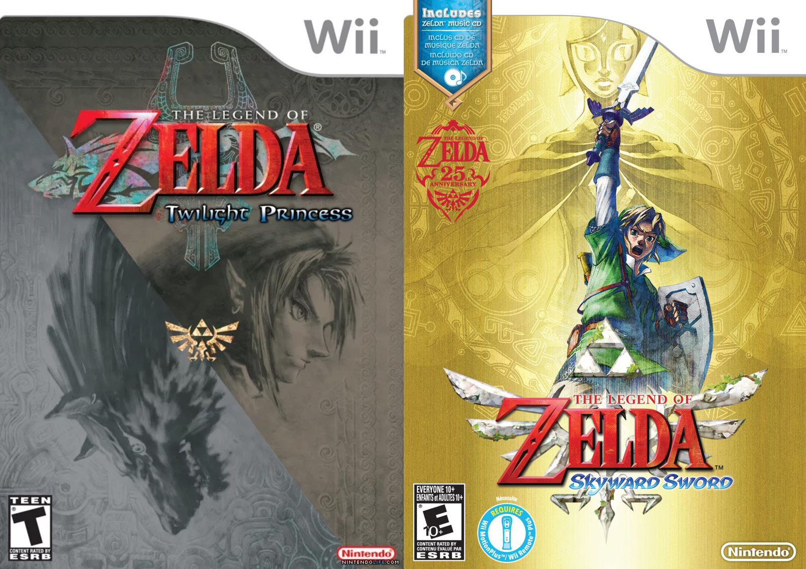
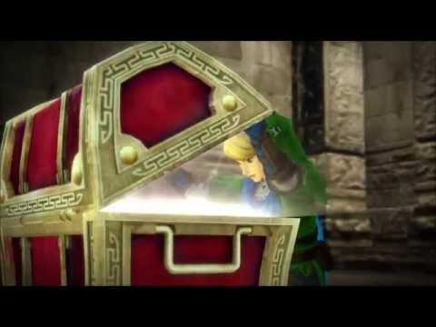
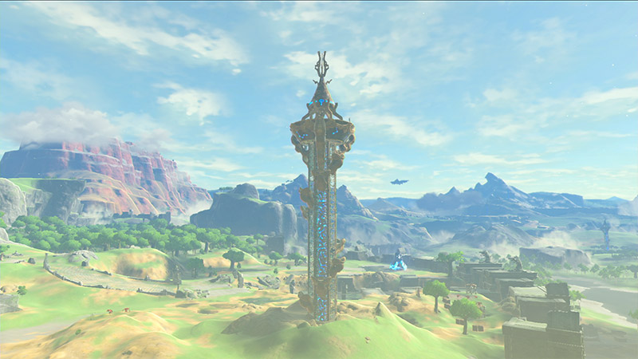

User Onboarding and
Brian Perry
d.o: brianperry / twitter: bricomedy / nintendo: wabrian
Todo: update template to Zelda-ify it.
HS2 Solutions
We're going to talk about video games. Christmas, mid 80s...
Got Atari, led to Nintendo, Windows 3.1 and programming. State website.
Lifelong love of Nintendo and web development.
Brings us all the way here to my 5yr old son and I at Chicago
Switch preview event.
Todo: Maybe follow up with top 5 games of all time slide.
Blue Chu Chu
I found my way to Drupal, but...
This is as Drupal as this presentaiton is going to get.
“User onboarding is the process of increasing the likelihood that new users become successful when adopting your product.” —Samuel Hulick of UserOnboard.com
User onboarding is the practice of making your product
or service as easy as possible for new customers to get value from.
Increasing the likelyhood users will be sucessful when adopting your product.
TODO - make the quotes pop a little more.
Success implies that the user is engaged,
They probably found success quickly.
They'll probably be back.
They are probably having fun on some level.
They "get it"
“User onboarding is the process of increasing the likelihood that new users become successful when adopting your product.”
Let's apply it to video games.
Player onboarding is the process of increasing the likelihood that new players become immersed in the game world .
Fun. Challenge. Understand mechanic / get it. Want to play more.
As promised, we're going to look at this through the lens of the legend of Zelda series.
The Legend of Zelda (NES - 1987)
VIDEO
No real description of what to do here...
Strange guy with sword? Sure.
A Link to the Past (SNES - 1992)
Does do more to direct the user...
VIDEO
We'll tell the user everything to do....
Onboarding Example:
Ok, I kind of lied before. We're going to look at Drupal's onboarding process.
Gulp.
Not so bad.
Hardly exciting, but reasonable.
Oh god, where is the Drupal community. All kids of stuff going on here.
Link's Quest: Find the Drupal Community
It's just like the beginning of Zelda. What? Where?
Maybe it is better if I validate my email.
So many tabs. What do I do?
Links quest: Get confirmed?
Sure seems dangerous out there...
Dangerous out there indeed.
Ocarina of Time (N64 - 1998)
VIDEO
Skip through with 5 second skip
Explaining with text.
Tutorials with text.
Showing the game world through someone else's eyes.
Finally convert over to gaming, but it is more tutorials.
Rules for game tutorials
Less text
No front loading
Make it fun
Reinforce learning through play
Listen to your players
(Extra Credits: Tutorials 101)
Applies to game tutorials and onboarding experiences.
https://medium.com/@gauravkulkarni/product-onboarding-and-video-games-4fcdbaeece60
Before
Slack actually kind of has the best of both worlds
An experience in line with Ocarina, and improvements that
address sme of the rules for game tutorials.
Old sreen probably has too much text
After
Less Text / No distractions!
Before
Tap these things, learn more info. Might hang around
and annoy you for a while.
Before
And still pretty verbose.
And slack also onboards you with their bot, which is fun.
Twilight Princess / Skyward Sword (2006 / 2011 Wii)

Dungeons and Item Gating

Recycled Traversal
One further - all of the dungeons are essentially the same.
This is why I thought the game was boring.
Breath of the Wild (Switch 2017)
VIDEO
Play up to battle with first bad guy. Or maybe Zelda
telling me where to go.
Whoa, slow down Google Image Search results.
Sheikah Towers

Sets up start high, look for cool stuff.
Sheikah Shrines
Explain what a shrine is.
Four of them, introduce most mechanics.
120 in game.
Small puzzle inside shrines.
The World In Miniature
Great plateau vs full map. (Story of kid who only played plateau)
Only one item gates you.
Different Climates
4 divine beasts.
Or just screw it all, and run right to Gannon.
Onboarding Example:
Onboarding Example:
Zelda - you should probably do... something...
Link to the past - use less text
Ocarina of time - don't front load, make it fun.
BOTW - Give user choice. Small slice of experience. Make it fun.
Maybe we can contribute to making this process better?
Feedback!
https://joind.in/talk/be2df
Bonus Level!
VIDEO
You might say that all games were like that. But super mario brothers 1-1.
Right up to the final level to be designed title card.


 After
After